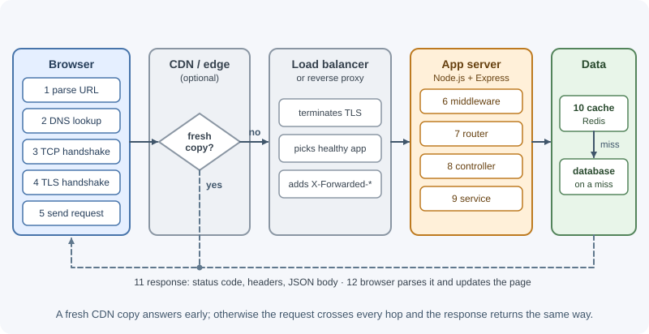
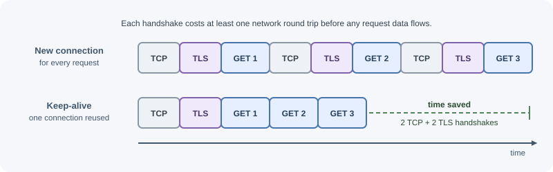
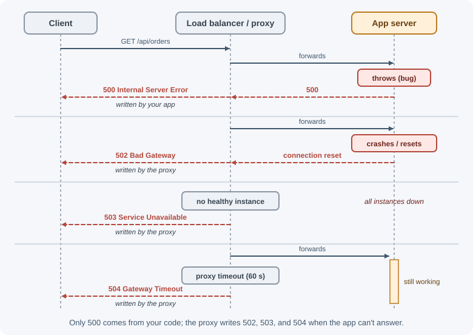

Client-Server Model and Request Lifecycle¶
In the client-server model, a client asks for something and a server answers. A single click in a browser sets off a chain of steps: name lookup, network connections, encryption, proxies, your application code, and the database. This page follows one request through every hop and back.
Why it matters¶
When a request is slow or fails, the cause can sit at any hop: DNS, TLS, a load balancer, your code, or the database. Knowing the full path lets you:
- Read an error and know which layer produced it (a
502from a proxy is not the same problem as a500from your code). - Find where latency comes from instead of guessing.
- Decide where a concern belongs: TLS at the proxy, authentication in middleware, business rules in a service.
- Understand why HTTP is called stateless and how logins still work.
Real-world usage¶
Every hop in this page has a timeout or limit set by the platform in front of your app. Three well-documented examples:
- AWS Application Load Balancer. The
load balancer attributes
list a default idle timeout of 60 seconds, and AWS
recommends
configuring your application's idle (keep-alive) timeout to be larger than
the load balancer's. Otherwise, the app can close a connection the load
balancer is about to reuse, which is the source of the classic
intermittent
502. - Cloudflare. When Cloudflare connects to your origin but gets no HTTP response within its default 125-second proxy read timeout, it returns its own Error 524. The status code comes from the CDN, not from your application.
- Heroku. The Heroku router
terminates a request after 30 seconds,
returns an error page, and logs an
H12error, even if your app is still working on it. The countdown starts after the router has sent the whole request to the app.
How it works¶
The client-server model¶
- A client initiates communication: a browser, a mobile app, a CLI, or another server calling your API.
- A server listens on an address and port and responds to requests.
- The roles describe who starts the conversation, not the hardware. Your backend is a server to the browser and a client to the payment provider it calls.
HTTP follows a request-response pattern: the client sends one request, the server sends one response. The server does not push data on its own over plain HTTP; for that, see real-time communication.
The full journey of one request¶
Suppose a user opens https://shop.example/orders and the page calls
GET https://api.shop.example/api/orders?page=1.

Each hop in detail¶
- URL parsing. The browser splits the URL into scheme, host, port
(default
443for HTTPS), path, and query string. - DNS resolution. The host name is turned into an IP address. Results are cached by the browser, the operating system, and resolvers, so this is often instant on repeat visits. See DNS.
- TCP connection. For HTTP/1.1 and HTTP/2, the client opens a TCP connection with a three-way handshake. That costs one network round trip before any data flows. See TCP and UDP.
- TLS handshake. For HTTPS, client and server agree on encryption keys and the client verifies the server's certificate. TLS 1.3 needs one more round trip on a new connection. See TLS and SSL.
- HTTP request. The client sends the method, target, headers, and an optional body. See HTTP methods and HTTP headers.
- CDN or edge cache. If a CDN sits in front and holds a fresh cached copy, it answers without touching your servers. API responses are often not cached, but static files and public data can be. See CDN.
- Load balancer or reverse proxy. It usually terminates TLS, chooses a
healthy backend instance, enforces limits (body size, timeouts), and
forwards the request over the internal network. It adds headers such as
X-Forwarded-Forso the app knows the real client IP. See load balancing. - Application middleware. Code that runs for many routes: assigning a request ID, logging, parsing the body, CORS, rate limiting, and checking the session or token. See middleware.
- Routing. The framework matches the method and path to a handler.
- Controller. Reads parameters, validates input, and calls a service.
- Service. Applies business rules and decides what data is needed.
- Cache and database. The service checks a cache, and on a miss queries the database. This is very often the slowest step.
- Response. The app sets a status code, headers, and a body. It travels back through the proxy and CDN to the client.
- Client handling. The browser checks the status, parses the body, and updates the page. For a document, it may then request more resources.
Where latency comes from¶
| Hop | What adds time | How to reduce it |
|---|---|---|
| DNS | Uncached lookups, slow resolvers | DNS caching, sensible TTLs |
| TCP + TLS | Round trips on each new connection, distance to server | Connection reuse (keep-alive), HTTP/2, TLS 1.3, servers or CDN near users |
| Proxy / load balancer | Extra hop, queueing under load | Keep it close to the app; scale it |
| Middleware | Expensive work on every request | Keep middleware cheap; scope it to routes that need it |
| Business logic | CPU-heavy work blocking the event loop | Move heavy work to workers or queues |
| Database | Missing indexes, too many queries, large results | Indexes, pagination, caching, fewer round trips |
| External APIs | Slow third parties | Timeouts, caching, asynchronous processing |
| Response size | Large JSON bodies | Pagination, field selection, compression |
A useful habit: measure each step (with logs, timing headers, or tracing) before optimizing. See logging and monitoring.
HTTP versions in brief¶
| Version | Transport | What changes for you |
|---|---|---|
| HTTP/1.1 | TCP | One request at a time per connection; browsers open several connections |
| HTTP/2 | TCP | Many requests multiplexed over one connection; compressed headers |
| HTTP/3 | QUIC over UDP | Faster connection setup; one lost packet does not stall every stream |
Your application code uses the same methods, headers, and status codes in every version. The proxy or CDN often speaks HTTP/2 or HTTP/3 to browsers and HTTP/1.1 to your app. See HTTP and HTTPS and QUIC and HTTP/3.
Keep-alive and connection reuse¶
Opening a TCP and TLS connection is expensive. HTTP/1.1 keeps connections open by default (persistent connections) so later requests skip the handshakes. HTTP/2 goes further and sends many requests over one connection at the same time.

On the server side, keep-alive has a timeout: an idle connection is closed
after a while. A classic bug happens when the app server's keep-alive
timeout is shorter than the load balancer's: the balancer reuses a
connection the app just closed, and some requests fail with 502. Node.js
closes idle keep-alive connections after 5 seconds by default (responses
carry Keep-Alive: timeout=5), while load balancers often wait much longer;
AWS Application Load Balancers default to 60 seconds. Set the app's
keep-alive timeout longer than the proxy's idle timeout. See
running Express in production.
Your backend is also a client. Reuse connections when it calls databases (connection pools) and other APIs (HTTP agents with keep-alive).
Where failures surface¶
| What you see | Usually produced by | Typical cause |
|---|---|---|
| Browser network error, no status | Client, DNS, or network | DNS failure, TLS error, server unreachable, CORS block |
500 Internal Server Error |
Your application | Unhandled exception, bug, failed dependency not mapped to another code |
502 Bad Gateway |
Proxy or load balancer | App crashed, closed the connection, or returned an invalid response |
503 Service Unavailable |
Proxy or the app itself | No healthy instances, overload, maintenance |
504 Gateway Timeout |
Proxy or load balancer | App took longer than the proxy's timeout |
4xx codes |
Your application (sometimes the proxy) | Bad input, missing auth, not found, rate limited |

The first question when debugging is "which layer returned this?" Response
headers (such as Server or a request-ID header) and proxy logs usually tell
you. See HTTP status codes.
Statelessness and how state is carried¶
HTTP is stateless: each request is understood on its own, and the protocol does not remember earlier requests. Applications still need to know who is logged in and what is in a cart, so state travels in one of these ways:
- Cookies. The server sets a cookie (often a session ID); the browser sends it back automatically on later requests to that site.
- Tokens. The client stores a token (for example a JWT) and sends it in
the
Authorizationheader. - Server-side storage. The session ID or token points to data held in a database or cache such as Redis.
- The URL. Query parameters carry non-sensitive state such as the page number or filters.
See sessions, cookies, and JWT.
When to use and when not to use¶
The lifecycle is always there; the choices are which layers to put in front of your app and where each concern lives.
Put a CDN in front when:
- You serve static assets or public, cacheable responses to users far from your servers.
- You want edge protection (TLS, DDoS filtering) without running it yourself.
Do not rely on a CDN for personalized API responses; they must not be cached publicly, so the CDN only adds a hop for them.
Put a reverse proxy or load balancer in front when:
- You run more than one app instance, or want zero-downtime deploys.
- You want TLS termination, request size limits, and timeouts in one place.
Talking directly to a single app process is fine for local development and internal tools, but it leaves TLS, health checks, and failover to you.
| Concern | Best place | Why not elsewhere |
|---|---|---|
| TLS termination | Load balancer or proxy | One place to manage certificates; apps stay simple |
| Static files | CDN or proxy | Node.js processes are better spent on dynamic work |
| Authentication and authorization | App middleware | Needs your user data and business rules |
| Rate limiting | Gateway or app (shared store) | Proxy limits are coarse; app limits know the user |
| Business rules | Service layer | Must be tested and reused independently of HTTP |
| Request IDs | Edge, propagated by every layer | One ID must follow the request end to end |
Practical examples¶
Watch a request with curl¶
curl -v https://api.example.com/health
-v prints the steps: the resolved IP, the TCP connection, the TLS
handshake, the request headers sent (> lines), and the response headers
received (< lines). Use an endpoint you are allowed to call.
Time each phase:
curl -o /dev/null -s -w "dns=%{time_namelookup} connect=%{time_connect} tls=%{time_appconnect} first_byte=%{time_starttransfer} total=%{time_total}\n" https://api.example.com/health
If first_byte is much larger than tls, the time is being spent on the
server, not on the network.
The raw request and response¶
GET /api/orders?page=1 HTTP/1.1
Host: api.shop.example
Accept: application/json
Authorization: Bearer eyJhbGciOi...
X-Request-Id: 7f3c9a2e
HTTP/1.1 200 OK
Content-Type: application/json; charset=utf-8
Cache-Control: private, no-cache
X-Request-Id: 7f3c9a2e
{"data":[{"id":"ord_1","total":4999}],"page":1,"hasMore":false}
Tracing the request through Express¶
import express from "express";
import { randomUUID } from "node:crypto";
const app = express();
// Middleware: give every request an ID and time it
app.use((req, res, next) => {
req.id = req.get("X-Request-Id") ?? randomUUID();
res.set("X-Request-Id", req.id);
const start = performance.now();
res.on("finish", () => {
const ms = (performance.now() - start).toFixed(1);
console.log(`${req.id} ${req.method} ${req.originalUrl} ${res.statusCode} ${ms}ms`);
});
next();
});
// Router + controller
app.get("/api/orders", async (req, res) => {
const page = Number(req.query.page ?? 1);
const orders = await findOrdersForPage(page); // service + data access
res.json({ data: orders, page });
});
async function findOrdersForPage(page) {
return [{ id: "ord_1", total: 4999 }]; // stands in for a database query
}
app.listen(3000);
The finish event fires once the response is sent, so the log line shows
the final status and the total time spent inside the app.
Best practices¶
- Propagate a request ID from the edge through every service and log line so one request can be traced end to end.
- Set timeouts at every layer, and make each inner timeout shorter than the outer one (database < app < proxy < client).
- Reuse connections with keep-alive and connection pools.
- Configure trust in proxy headers correctly so the app sees the real client IP and protocol. See the request object.
- Cache where it is safe: static assets at the CDN, expensive reads in a cache, and HTTP caching headers for public data.
- Keep middleware cheap and run expensive checks only on routes that need them.
In production¶
- Intermittent
502errors with no app errors. Symptom: about one request in a few thousand fails with502, often the first request after an idle period. Detect: the load balancer's logs show it generated the502, while the app logged no error for that request. Cause: the app's keep-alive timeout (5 seconds by default in Node.js) is shorter than the load balancer's idle timeout. Fix: raiseserver.keepAliveTimeoutabove the load balancer's idle timeout, as AWS recommends for its load balancers. 504,524, orH12on slow endpoints. Symptom: large exports or reports fail, small ones work. Detect: the error is produced by the proxy or platform (Cloudflare524, HerokuH12, a load balancer504) at a fixed duration. Cause: the request outlives the proxy's timeout. Fix: make the work asynchronous (202plus a status URL), or speed it up; raising timeouts only hides the problem.- Every request appears to come from one IP.
Symptom: rate limiting blocks all users at once, and logs show the same
client IP for everyone. Detect: the logged IP is the load balancer's
private address. Cause: the app reads the socket address, not the
forwarded header. Fix: configure trusted proxies (Express
trust proxy) for exactly the proxies you run. - High latency on backend-to-backend calls. Symptom: a call that takes 20 ms inside the data center takes 100 ms or more from your app. Detect: tracing shows time in connection setup and TLS handshakes on every call. Cause: a new connection per request. Fix: reuse one HTTP client or agent with keep-alive, and use database connection pools.
- Timeouts that do not nest. Symptom: clients retry while the server is still working, multiplying load during an incident. Detect: duplicate request IDs or repeated identical requests in logs during slowdowns. Cause: the client's timeout is shorter than the server's work, or inner timeouts are longer than outer ones. Fix: order timeouts database < app < proxy < client, and make retried operations idempotent.
Important terminology¶
- Client: the side that initiates a request.
- Server: the side that listens and responds.
- Round trip (RTT): the time for a message to reach the other side and a reply to come back.
- DNS resolution: converting a host name to an IP address.
- TLS termination: decrypting HTTPS at a proxy and forwarding plain HTTP internally.
- Reverse proxy: a server that sits in front of application servers and forwards requests to them.
- Upstream: the server a proxy forwards to (your app, from the proxy's point of view).
- Keep-alive: reusing an open connection for more than one request.
- Stateless protocol: each request is interpreted without memory of earlier ones.
- Latency: the delay before a response arrives.
Common mistakes and misconceptions¶
- "HTTP keeps me logged in." HTTP is stateless; cookies or tokens carry the login on every request.
- Treating every
5xxas an app bug.502and504usually come from a proxy that could not get a good, timely answer from the app. - Ignoring connection setup cost. Opening a new TLS connection for every backend-to-backend call adds round trips; use keep-alive agents and pools.
- App keep-alive shorter than the load balancer's idle timeout, causing
intermittent
502errors. - Trusting
X-Forwarded-Forfrom anyone. Only trust it when it is set by your own proxy. - Optimizing code first when the time is actually spent in a missing database index or a slow external call.
Revision questions¶
- List the steps between typing a URL and your Express handler running.
- Which hops add round trips on a brand-new HTTPS connection, and how does keep-alive help?
- A user sees
504 Gateway Timeout. Which component produced it, and what are the likely causes? - If HTTP is stateless, how does a server know which user sent a request?
- Why should the app's keep-alive timeout be longer than the load balancer's idle timeout?
Further learning¶
- MDN: An overview of HTTP covers the client-server model, requests, and responses.
- MDN: Client-server overview explains what happens when a browser talks to a web server.
- RFC 9110: HTTP Semantics defines the request-response semantics shared by every HTTP version.